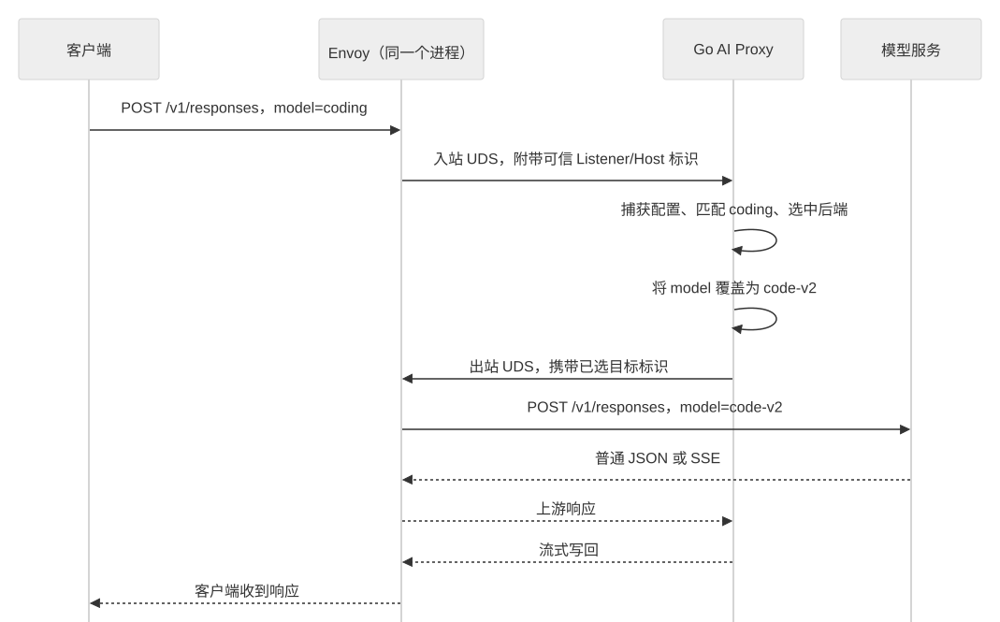

Ingate 当前架构与数据流
2026-10-20 · 描述当前代码实现；真实 Envoy、数据库和跨进程部署尚未验收
Controller 使用 krt 计算依赖，通过 Delta ADS 分别向 Envoy 和 Go AI Proxy 下发资源。普通 HTTP 由 Envoy 转发；模型与 MCP 经两段 UDS 交给 Go 处理协议，再由 Envoy 连接后端。不再通过 ConfigMap 下发 AI 配置。
设计与边界见 增量编译设计、编译资源契约和请求与部署契约。本页引用仓库内 SVG，无脚本或外部渲染服务，可离线查看；维护源见图表说明。
权威资源、两路配置与查询投影
六类领域资源写入 API Server/etcd。Controller 编译后分别发布 Envoy 和 AI Proxy 资源，并异步维护 MySQL 查询投影。管理端账户和 Redis Session 不参与数据面选路。

三种路由共享网络 Backend，模型服务契约独立定义
六种资源均已实现。箭头表示引用，不是请求转发：三种路由通过 parentRefs 引用同 Namespace 的 Gateway；ModelRoute 经 AIBackend 引用 Backend，HTTPRoute 和 MCPRoute 直接引用 Backend。统一资源类型不要求所有业务共用同一个实例。

模型与 MCP 共用运行组件，分别处理协议
下图用 coding → code-v2 说明模型映射。Chat Completions 与 Responses 共用选路与出口；MCP 使用自己的精确路径与信封校验。一次请求只捕获一份 Go 配置，响应流经原链路返回；普通 HTTP 不经过 Go。

独立资源、整批应用与版本重连
首次同步全集，后续下发变化与明确删除。AI Proxy 校验候选并切换不可变视图后 ACK，坏批次 NACK 后按已接受版本重连。断线保旧，不提供两路代理的原子切换或即时撤销。
